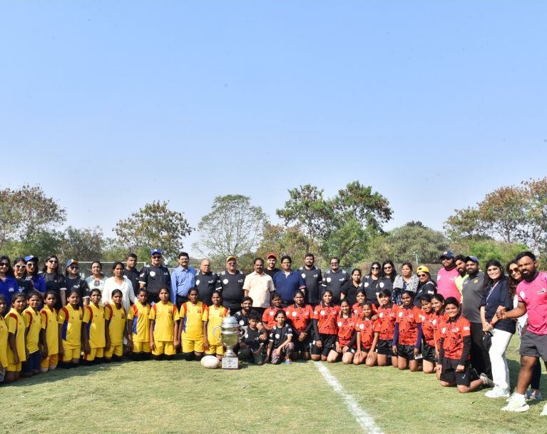
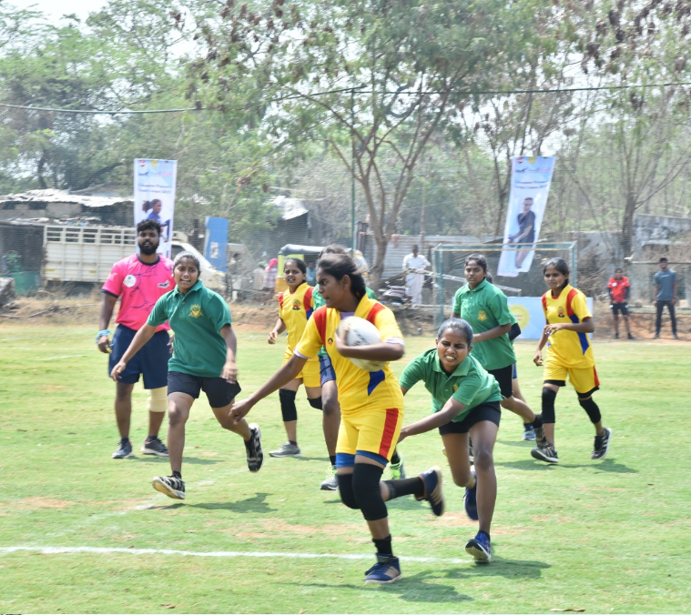
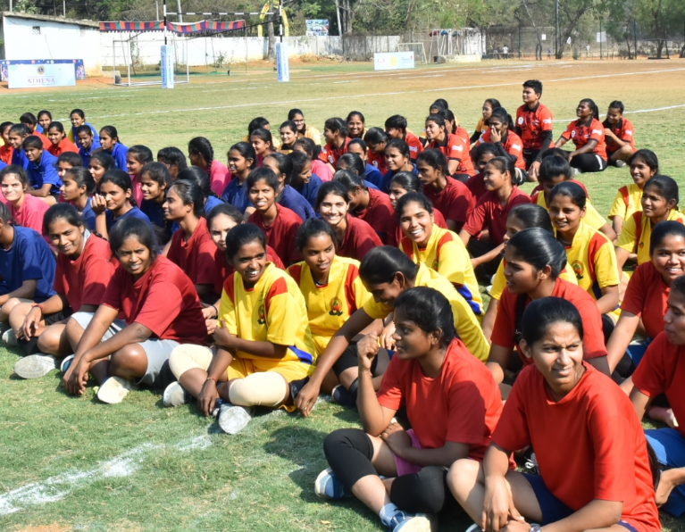
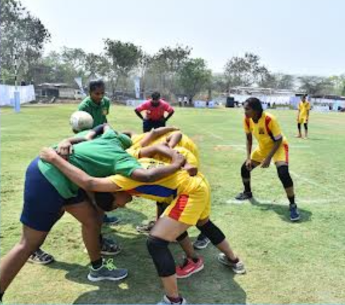

Rugby is a fast-paced and physically demanding team sport that requires strength, speed, teamwork, and strategy. It is played between two teams who try to score points by carrying, passing, or kicking an oval-shaped ball to the opponent’s goal area. Players must work together to move the ball forward while defending against the opposing team. Rugby helps develop physical fitness, coordination, leadership, and team spirit among players. The game also teaches discipline, determination, and respect for teammates and opponents, making it an exciting and competitive sport enjoyed around the world.



